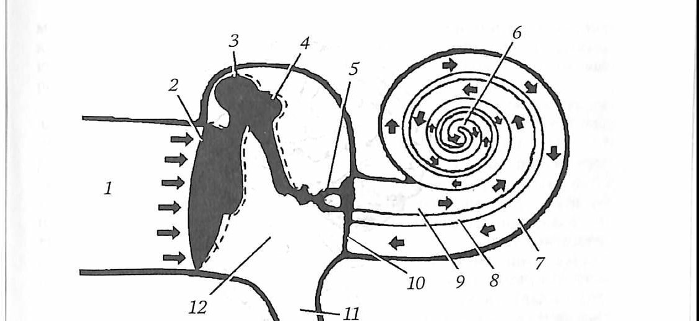
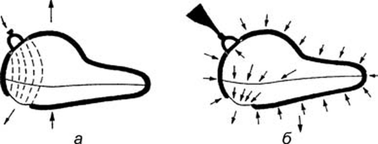

Наружное и среднее ухо
Из чего состоит звукопроводящая часть уха
К звукопроведению относятся наружное и среднее ухо. Наружное ухо образуют ушная раковина, наружный слуховой проход и барабанная перепонка. В среднее ухо входят барабанная полость с её содержимым, сосцевидные ячейки и слуховая труба. Барабанная перепонка служит границей между ними, а лабиринтная стенка барабанной полости отделяет среднее ухо от внутреннего.
Ушная раковина и наружный слуховой проход
Ушная раковина (auricula) представляет собой эластический хрящ, покрытый тонкой кожей. Хрящевая основа занимает две верхние трети, а нижняя треть, мочка, это кожная складка с жировой тканью. Подкожной клетчатки над хрящом нет, поэтому форма хряща видна снаружи, а ветви артерий, не окружённые жиром, делают раковину уязвимой для отморожения.
Наружный слуховой проход (meatus acusticus externus) заканчивается слепо, упираясь в барабанную перепонку. Его длина у взрослого около 24 мм: одна треть приходится на хрящевую часть, две трети на костную. Диаметр просвета составляет 6–9 мм, наиболее узок он на стыке хрящевой и костной частей. Проход изогнут: хрящевой отдел направлен вверх и назад, костный вперёд и вниз, поэтому для осмотра раковину оттягивают кверху и кзади. В хрящевом отделе хрящ прерывается вертикальными вырезками, санториниевыми щелями, заполненными фиброзной тканью.
Строение кожи прохода имеет прямое клиническое значение. В хрящевом отделе она содержит волосы, сальные и церуминозные железы, вырабатывающие ушную серу, и хорошо выраженную подкожную клетчатку, поэтому здесь образуются серные пробки, атеромы и фурункулы. В костном отделе волос и желёз нет, кожа тонкая, плотно сращена с надкостницей и на перепонку переходит одним эпидермисом, из-за чего воспаление костного отдела протекает очень болезненно.
Передняя стенка граничит с височно-нижнечелюстным суставом, и травма нижней челюсти может привести к её перелому. К нижней и частично передней стенкам хрящевого отдела прилежит околоушная слюнная железа, а санториниевы щели позволяют воспалению переходить с железы на проход и обратно. Верхняя стенка костного отдела обращена в среднюю черепную ямку, поэтому процесс на ней может распространиться в полость черепа.
Задняя стенка отделяет проход от ячеек сосцевидного отростка, а её верхнемедиальный отрезок служит передней стенкой сосцевидной пещеры. В хирургическом отношении она важнее остальных: рядом проходит вертикальная часть канала лицевого нерва, а в глубине виден выступ латерального полукружного канала. Сигмовидный синус лежит вблизи задней стенки, примерно в 12 мм от неё.
Барабанная перепонка
Барабанная перепонка (membrana tympanica) представляет собой тонкую округлую пластинку диаметром 9–11 мм и толщиной около 0,1 мм. Она стоит косо и образует с горизонтальной плоскостью угол 45°, поэтому фактически продолжает верхнюю стенку прохода. В центре перепонка втянута внутрь и образует углубление, пупок. Тремя четвертями окружности она фиксирована в барабанной борозде через волокнисто-хрящевое кольцо, а верхняя четверть крепится в вырезке чешуйчатой части височной кости.
Соответственно этому различают две части. Натянутая часть (pars tensa) занимает большую площадь и имеет фиброзную основу из радиальных наружных и циркулярных внутренних волокон. Ненатянутая часть (pars flaccida, шрапнелева мембрана) расположена вверху, имеет ширину около 2 мм, лишена фиброзного слоя и состоит из эпителия кожного типа, сращённого со слизистой оболочкой. Снаружи перепонка покрыта многослойным плоским эпителием, продолжающим кожу прохода, изнутри выстлана слизистой оболочкой барабанной полости. Рукоятка молоточка вплетена в перепонку радиальными волокнами и служит основным опознавательным знаком.
Для описания находок перепонку делят вертикальной линией по рукоятке молоточка и перпендикулярной линией через пупок на передневерхний, передненижний, задневерхний и задненижний квадранты. Неизменённая перепонка выдерживает давление до 100 мм рт. ст., а резкие перепады давления разрывают её прежде всего в задней половине. Малососудистая промежуточная зона, особенно в нижних квадрантах, пригодна для парацентеза с меньшим риском кровотечения.

Барабанная полость: размеры и этажи
Барабанная полость (cavitas tympani) имеет объём около 2 см³ и лежит между наружным слуховым проходом и лабиринтом. В ней находятся цепочка слуховых косточек, связки, две мышцы, сосуды и нервы, а все стенки и образования покрыты слизистой оболочкой, плотно сросшейся с надкостницей. Расстояние между латеральной и медиальной стенками в передненижнем отделе около 3 мм, в заднем 5,5–6,5 мм, а от пупка до стенки лабиринта оно минимально и составляет около 2 мм. Поэтому парацентез выполняют в задненижнем квадранте, где острием труднее достичь стенки лабиринта.
По высоте полость делят на три этажа. Надбарабанное углубление (аттик, epitympanum) лежит выше перепонки, содержит головку молоточка и тело наковальни и через вход в пещеру открывается в сосцевидную пещеру. Средний отдел (мезотимпанум) соответствует натянутой части перепонки, нижний (гипотимпанум) расположен ниже её уровня. Изменения в аттике вызывают более выраженные функциональные нарушения, чем в других отделах, а через каменисто-чешуйчатую щель и дигесценции крыши инфекция может проникнуть в среднюю черепную ямку. Слизистая оболочка между этажами образует тимпанальную диафрагму с двумя постоянными соустьями, передним и задним; при воспалительном отёке они закрываются, и верхний этаж оказывается изолированным.
Между ненатянутой частью перепонки и шейкой молоточка находится верхний карман, или пространство Пруссака. Книзу от него лежат передний и задний карманы перепонки (карманы Трёльча), которые при хроническом эпитимпаните необходимо ревизовать во избежание рецидива.
Стенки барабанной полости и их соседи
Полость имеет шесть стенок. Латеральная, перепончатая, образована перепонкой и окружающей костью. Передняя, сонная, есть лишь в нижней половине полости: в верхней части лежит устье слуховой трубы, а при дигесценциях возможно ранение сонной артерии во время парацентеза. Нижняя, яремная, стенка образует дно на 2,5–3 мм ниже края перепонки; в этом углублении скапливается невидимая при осмотре жидкость, а под ним лежит луковица внутренней яремной вены, иногда выступающая в полость и также подверженная ранению при дигесценциях дна.
Задняя, сосцевидная, стенка содержит пирамидальное возвышение со стременной мышцей, а позади него в глубине проходит лицевой нерв; кнаружи от возвышения выходит барабанная струна. Верхняя, покрышечная, стенка служит крышей полости и дном средней черепной ямки; она может быть очень тонкой и нередко имеет дигесценции, так что слизистая оболочка прилежит к твёрдой мозговой оболочке.
Медиальная, лабиринтная, стенка отделяет среднее ухо от внутреннего. Её центр занимает мыс, образованный основным завитком улитки, с бороздами барабанного сплетения. Кзади и книзу от него находится ниша круглого окна, кзади и кверху овальное окно, где закреплено основание стремени. Над овальным окном идёт канал лицевого нерва, выше него располагается выступ латерального полукружного канала на расстоянии 3 и 4,5 мм от окна.
Для ориентации при вмешательствах содержимое полости проецируют на квадранты перепонки. Передневерхнему соответствуют верхняя часть устья слуховой трубы и улитковый отросток, передненижнему нижняя часть устья и передняя часть мыса. Задневерхний квадрант проецируется на длинную ножку наковальни, стремя с овальным окном и пирамидальное возвышение, задненижний на нишу круглого окна.

Слуховые косточки и внутриушные мышцы
Цепочка состоит из молоточка, наковальни и стремени, соединённых суставами и связками. У молоточка различают рукоятку, шейку и головку, лежащую в аттике и сочленённую с телом наковальни. Длинная ножка наковальни идёт параллельно рукоятке и образует наковально-стременной сустав, обладающий наибольшим объёмом движений. Стремя расположено почти горизонтально, и через перфорацию перепонки видна лишь его головка. Основание стремени удерживается в овальном окне кольцевидной связкой, которая закрывает щель и обеспечивает подвижность стремени, подобную движению поршня.
Две мышцы регулируют передачу колебаний. Мышца, напрягающая барабанную перепонку, начинается у слуховой трубы, прикрепляется к рукоятке молоточка и иннервируется нижнечелюстным нервом. Стременная мышца лежит в пирамидальном возвышении, её сухожилие крепится к шейке стремени, а иннервирует её лицевой нерв.
Слуховая труба
Слуховая труба (tuba auditiva), или евстахиева, соединяет барабанную полость с носоглоткой. Её длина 33–39 мм, чаще 36 мм: костная часть составляет 12 мм, хрящевая 24 мм. Глоточное отверстие находится на боковой стенке носоглотки на уровне заднего конца нижней носовой раковины, барабанное в передненижнем отделе передней стенки полости. У взрослого барабанное отверстие лежит примерно на 2 см выше глоточного, у ребёнка труба короче, шире и расположена горизонтально. Самое узкое место, перешеек, находится на стыке костной и хрящевой частей, а по форме выделяют три типа трубы: прямую с широким перешейком и два типа с S-образным изгибом, из которых третий имеет узкий перешеек.
В покое хрящевой отдел представляет собой закрытую щель, а при жевании и глотании просвет раскрывается за счёт сокращения мышцы, напрягающей нёбную занавеску, и воздух поступает в барабанную полость. Нижняя часть медиальной стенки костного отдела, одновременно латеральной стенки сонного канала, обычно хорошо пневматизирована, поэтому при гнойных процессах возможно расплавление стенки сосудов.
Строение и физиология слуховой трубы
Лишь в 50-е гг. XIX в. Тойнби выявил, что в норме евстахиева труба пребывает в спавшемся состоянии и открывается лишь во время акта глотания. Гартман, основоположник экспериментального изучения слуховой трубы, около 100 лет назад для исследования ее функции использовал манометр и рекомпрессионную камеру. Он показал, что слуховая труба остается непроходимой для воздуха даже в том случае, если давление в рекомпрессионной камере достигает 130 мм рт. ст. При таком высоком давлении окружающего воздуха у испытуемых возникали в ушах болевые ощущения, понижение слуха, а в некоторых случаях и кровоизлияния в барабанную перепонку. Но как только при таком давлении испытуемый начинал совершать глотательные движения, все указанные явления немедленно проходили, и слух восстанавливался до исходного уровня. по: Бабияк и соавт., т. 2, с. 345–346
Слуховая труба (tuba auditiva) представляет собой активный клапан, выравнивающий давление воздуха в барабанной полости с атмосферным давлением окружающей воздушной среды. У взрослого человека средняя длина слуховой трубы составляет 3,6–4,5 см. Хрящевая часть составляет 2/3 длины слуховой трубы (24–30 мм), костная часть — 1/3 длины (12–15 мм). В месте перехода костной части в перепончато-хрящевую находится самая узкая часть слуховой трубы — перешеек (isthmus tubae auditivae). Над костной частью слуховой трубы проходит мышца, натягивающая барабанную перепонку. Внутри костной части расположен канал внутренней сонной артерии. по: Бабияк и соавт., т. 2, с. 346
Слизистая оболочка, выстилающая слуховую трубу, покрыта мерцательным эпителием, эффективное движение которого совершается в сторону носоглотки. Этим реализуется вторая — дренажная функция слуховой трубы. В области носоглоточного устья слуховой трубы имеются скопления лимфоидной ткани — трубные миндалины. Клапанная функция слуховой трубы обеспечивается мышцей, поднимающей, и мышцей, натягивающей небную занавеску (m. levator et m. tensor veli palatini). При сокращении этих мышц, возникающем во время акта глотания, оттягивается перепончатая стенка слуховой трубы, и просвет последней раскрывается на доли секунды, которых, однако, достаточно для поступления воздуха в барабанную полость (реализация вентиляционной функции слуховой трубы). по: Бабияк и соавт., т. 2, с. 346–347
По Н. А. Паутову (1959), слуховая труба, спускаясь вниз из барабанной полости в носоглотку, образует с горизонтальной плоскостью угол в 30–40°. Это обстоятельство следует учитывать при бужировании трубы. У детей слуховая труба более короткая и широкая, чем у взрослых, а у новорожденных она практически зияет и равна 2 см, и ее глоточное устье лежит на уровне твердого неба и представляется в виде щели. У детей слуховая труба прямая и лежит более горизонтально, чем у взрослых. Возрастная инволюция слуховой трубы начинается с атрофии жировой ткани, прилегающей к латеральной стенке перепончато-хрящевой части трубы и служащей для нее эластичным сдавливающим футляром. Труба в местах атрофии жировой ткани неравномерно расширяется с образованием дивертикулов, что, несомненно, ухудшает ее функции. по: Бабияк и соавт., т. 2, с. 347
По Н. А. Паутову, существуют три основных типа слуховой трубы:
- первый тип приближается по форме к слуховой трубе животных и новорожденных: она прямая, ее просвет постепенно расширяется по направлению к глоточному устью, перешеек почти не выражен;
- второй тип — наиболее распространенный — труба имеет S-образную форму, перешеек хорошо выражен;
- третий тип — перешеек особенно узок, труба сильно изогнута; кроме постоянного изгиба на уровне isthmus, здесь же имеется коленообразный перегиб трубы вниз. Этот тип слуховой трубы является одним из факторов риска в отношении баротравматизма и других заболеваний среднего уха.
по: Бабияк и соавт., т. 2, с. 347–348
Для нормального функционирования системы звукопроведения среднего уха необходимо соблюдение двух основных условий: рычажная система слуховых косточек должна находиться в воздушной среде; давление воздуха в барабанной полости должно находиться в оптимальном соотношении с наружным атмосферным давлением. Основную роль в осуществлении вентиляционной функции слуховой трубы играют глотательные движения, совершаемые непроизвольно в процессе накопления в полости рта определенного количества слюны, достаточного для инициирования глотательного рефлекса. Реализация этого рефлекса протекает совершенно незаметно для человека и совершается в среднем один раз в одну минуту. по: Бабияк и соавт., т. 2, с. 348
При естественно закрытом состоянии слуховой трубы воздух, находящийся в барабанной полости, постепенно растворяется в слизи, покрывающей слизистую оболочку среднего уха, и всасывается в окружающие ткани. В результате этого в полостях среднего уха возникает отрицательное относительно атмосферного давление, которое обусловливает «физиологическое» втяжение барабанной перепонки. Это явление приводит к смещению рукоятки молоточка кнутри и тракции тела наковальни кнаружи. При этом происходит легкое сдавление барабанной струны, лежащей между шейкой молоточка и телом наковальни. Раздражение барабанной струны, содержащей секреторные волокна для слюнных подчелюстной и подъязычной желез, приводит к усиленному выделению слюны и скоплению ее в рецепторных зонах глотки, обеспечивающих непроизвольный глотательный рефлекс. Его реализация приводит к раскрытию слуховой трубы, поступлению порции воздуха в барабанную полость и выравниванию давления. Молоточек и наковальня возвращаются в исходную позицию и «освобождают» барабанную струну. по: Бабияк и соавт., т. 2, с. 348
При длительной непроходимости слуховой трубы, вызванной каким-либо патологическим состоянием, в барабанной полости происходит значительное падение давления и появление в результате этого транссудата. Кроме того, длительное пребывание суставов слуховых косточек и мышц барабанной полости в неподвижном и напряженном состоянии приводит к их контрактурам. Все это вместе взятое резко повышает импеданс звукопроводящей системы и приводит к возникновению кондуктивной тугоухости. Длительное втяжение барабанной перепонки и соответствующее длительное вдавление в преддверие подножной пластинки стремени ухудшает эндокохлеарное звукопроведение и циркуляцию внутриулитковых жидкостей. Поэтому нередко при длительно текущих тубоотитах (сальпингоотит, евстахиит) к кондуктивной форме тугоухости присоединяются и явления нарушения звуковосприятия. Если парциальное давление кислорода в барабанной полости приближается к давлению в капиллярах слизистой (60–65 мм рт. ст.), в барабанную полость кроме транссудата начинают пропотевать форменные элементы крови. по: Бабияк и соавт., т. 2, с. 349
Дренажная функция слуховой трубы осуществляется благодаря функции ее мерцательного эпителия, обеспечивающего клиренс слизи из среднего уха в сторону носоглотки. Тубарные миндалины обеспечивают локальный иммунитет в области носоглоточного отверстия слуховой трубы. Кроме того, открытие слуховой трубы всего лишь на долю секунды сводит к минимуму возможность ее инфицирования через носоглотку. Указанный комплекс защитных механизмов ставит под сомнение «теорию» инфицирования среднего уха путем проникновения инфекции через слуховую трубу из носоглотки. Как полагал Г. Кобрак (1963), многие воспалительные заболевания среднего уха, которые прежде связывали со слуховой трубой, на самом деле являются следствием гемато- и лимфогенного распространения инфекции. по: Бабияк и соавт., т. 2, с. 349
Сосцевидный отросток и антрум
Сосцевидный отросток содержит воздухоносные ячейки, самая крупная из которых, сосцевидная пещера (antrum mastoideum), продолжает ось аттика и просвет слуховой трубы. Её длина около 12 мм, ширина 6–7 мм, высота 8–9 мм. Передняя стенка пещеры совпадает с задней костной стенкой наружного слухового прохода, а дно лежит на уровне середины этой стенки.
Различают четыре типа пневматизации: пневматический (много относительно крупных ячеек, встречается чаще всего), диплоический, склеротический (множество мелких ячеек) и смешанный. При пневматическом типе пещера залегает поверхностно, на глубине 5–9 мм, а при склеротическом и диплоическом глубоко, на 10–16 мм. Ячейки выстланы слизистой оболочкой и в норме служат резонаторами, усиливающими костную проводимость звука.
Возрастные особенности и проведение звука
К рождению слуховые косточки практически полностью развиты, а размеры барабанной полости и перепонки близки к взрослым. Перепонка новорождённого стоит почти горизонтально и лишь в раннем возрасте становится более вертикальной. Нижняя стенка наружного слухового прохода у новорождённого лишена кости, её окостенение продолжается примерно до двух лет, поэтому на первом году перепонку осматривают, оттягивая раковину книзу и кзади, а к концу второго года кверху и кзади. Сосцевидный отросток у новорождённого не развит, пневматизация начинается в 2–3 года, пещера лежит поверхностно, и при трепанации у ребёнка легче повредить лицевой нерв.
Звук улавливается раковиной, направляется по слуховому проходу и колеблет барабанную перепонку. Колебания передаются по цепи молоточка, наковальни и стремени, и основание стремени, смещаясь в овальном окне, приводит в движение перилимфу, а через вторичную барабанную перепонку колебания передаются эндолимфе. Ухо воспринимает частоты от 16 до 20 000 Гц, а для речи оптимален диапазон 1000–4000 Гц.

Механизмы звукопроведения
Под звукопроведением понимают процесс поступления звуковой энергии к рецепторам улитки. Различают три типа звукопроведения: условно воздушный, тканевый и тубарный. Условность названия «воздушный путь» очевидна, поскольку фактически он также сопровождается тканевым звукопроведением; разница лишь в том, что при воздушном типе источник звука сначала приводит в колебательное движение окружающий воздух и уже опосредованно через него передаёт энергию тканям звукопроводящей системы. Поэтому правильнее называть этот тип звукопроведения трансмиссионным. При «чисто» тканевом типе источник звука контактирует непосредственно с тканями головы и звуковая энергия, минуя воздушную часть трансмиссионного пути, попадает непосредственно к рецепторным органам улитки. Тубарное звукопроведение занимает промежуточное положение между двумя предыдущими типами и практически не отделимо от них. по: Бабияк и соавт., т. 2, с. 322–323
Важнейшим элементом системы звукопроведения, независимо от его типа, является вторичная барабанная перепонка, герметически закрывающая барабанное (круглое) окно. В XVIII в. считали, что именно эта перепонка является приёмником звука; лишь в 1841 г. Вебер (Weber E. H.) доказал, что такой путь распространения звука к рецепторам улитки принципиально невозможен, поскольку при переходе звуковых волн из воздушной среды непосредственно в жидкостную более 90% энергии отражается обратно в воздушную среду. Об этом свидетельствует и клинический опыт: разрыв цепи слуховых косточек приводит к резкой потере слуха, а наличие при этом перфорации барабанной перепонки, обеспечивающей прямой доступ звуковой энергии к барабанному окну, не приводит к его улучшению. В настоящее время круглое окно рассматривается как статический стабилизатор давления в жидкостных средах улитки, действующий при колебательных движениях стремени. по: Бабияк и соавт., т. 2, с. 323
Опыты Т. Н. Мильштейн (1937) с пломбированием ниши барабанного окна одного уха показали, что при его закрытии и воздействии на животное сильным звуком акутравма наступала только в интактном ухе. К механизму защиты спирального органа относится и особая ниша окна улитки (fossula fenestrae cochleae), ориентированная вниз и несколько назад по отношению к барабанной перепонке: её защитный «козырёк» (crista fenestrae cochleae) экранирует попадание в окно звуковых волн, излучаемых непосредственно барабанной перепонкой. Кроме того, волны от барабанной перепонки достигают круглого окна с запозданием по сравнению с волнами, распространяющимися посредством цепи слуховых косточек; при некоторых частотах, в основном речевого диапазона, происходит сложение волн при слабых звуках и их вычитание — при сильных. Определённую роль в защите рецепторов от интенсивного звука играет водопровод улитки, который «сбрасывает» часть звуковой энергии в соседние пространства ушного лабиринта. по: Бабияк и соавт., т. 2, с. 323
Тканевое, или костное, звукопроведение реализуется в результате проникновения звуковой энергии через ткани головы к подвижным звукопроводящим элементам улитки. Независимо от того, по какому пути звуковая энергия распространяется к жидким средам улитки, в итоге в улитке возникает один и тот же колебательный процесс, результатом которого является раздражение волосковых клеток. Эффективное тканевое звукопроведение возможно лишь в том случае, когда источник звука (ножка камертона, костный телефон аудиометра) непосредственно контактирует с костной поверхностью черепа (площадкой сосцевидного отростка, теменем, лбом). При костном проведении субъективно воспринимаемый звук ничем не отличается от звука при воздушном проведении. Ф. Бецольд, Г. Герцог, Г. Кобрак в опытах на животных показали, что при костном звукопроведении возникают движения подножной пластинки стремени, идентичные тем, которые наблюдаются при воздушном типе звукопроведения. по: Бабияк и соавт., т. 2, с. 324
В настоящее время рассматривают как реально возможные два механизма тканевого звукопроведения — компрессионный и инерционный. Компрессионная теория основывается на исследованиях Г. Герцога (Herzog H., 1930), который доказал наличие компрессионных феноменов в жидкостях искусственной модели улитки и наблюдал ритмические флюктуации перепончатого лабиринта при костном звукопроведении. Поскольку мембрана окна улитки намного податливее подножной пластинки стремени, звуковое давление, передающееся по принципу компрессии жидким средам улитки, распространяется в основном в направлении круглого окна, то есть таким же путём, как и при естественном звукопроведении. В основе компрессионного механизма лежат циклические изменения объёма полостей черепа и внутреннего уха, возникающие с частотой подаваемого звука; это влияние может исходить не только из непосредственной близости к улитке, например с сосцевидного отростка, но и из отдалённых мест, например с локтевой кости или коленной чашечки. по: Бабияк и соавт., т. 2, с. 324–325
Инерционная теория основана в основном на расчётах, при которых доказывается возможность инерционного смещения цепи слуховых косточек в силу наличия у них определённой массы. Расчёты и эксперименты показали, что компрессионный путь тканевого звукопроведения реализуется в основном при высокочастотных звуках, а инерционный — при низкочастотных. Звуки, частота которых не превышает 800 Гц, приводят в колебательное движение весь череп en masse; колебания, передаваясь стенкам ушного лабиринта, приводят в движение перилимфу, а изменения давления передаются подножной пластинке стремени и всей цепи слуховых косточек. Мембрана круглого окна в силу своей ничтожной массы колеблется вместе с костной рамкой, в то время как слуховые косточки из-за своей инерционности отстают по фазе; возникает инерционный фазовый сдвиг между лестницей преддверия и барабанной лестницей, который и обусловливает движения основной мембраны. по: Бабияк и соавт., т. 2, с. 325

Источники
- Гайворонский И. В., Гайворонский А. В., Ничипорук Г. И., Гайворонский А. И. Функциональная анатомия ЛОР-органов. — СПб.: СпецЛит, 2022. — С. 108–137, 158–159, 166–169 (PDF, с. 55–69, 80, 84–85).
- Бабияк В. И., Накатис Я. А., Говорун М. И. Оториноларингология. Руководство. Т. 2. — СПб.: Питер, 2009. — Гл. 24 «Анатомия и физиология уха», разделы «Механизмы звукопроведения», рис. 24.23: с. 322–326; «Слуховая труба»: с. 345–349.
Раздел «Учебник» — справочная теория, не клинические рекомендации. Тактика ведения пациента — по разборам КР.